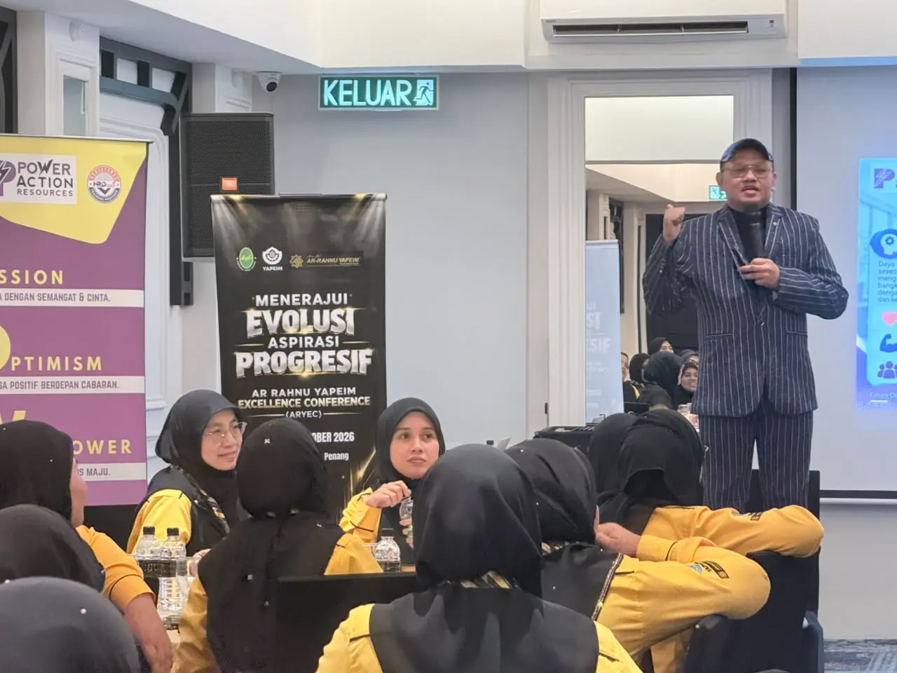
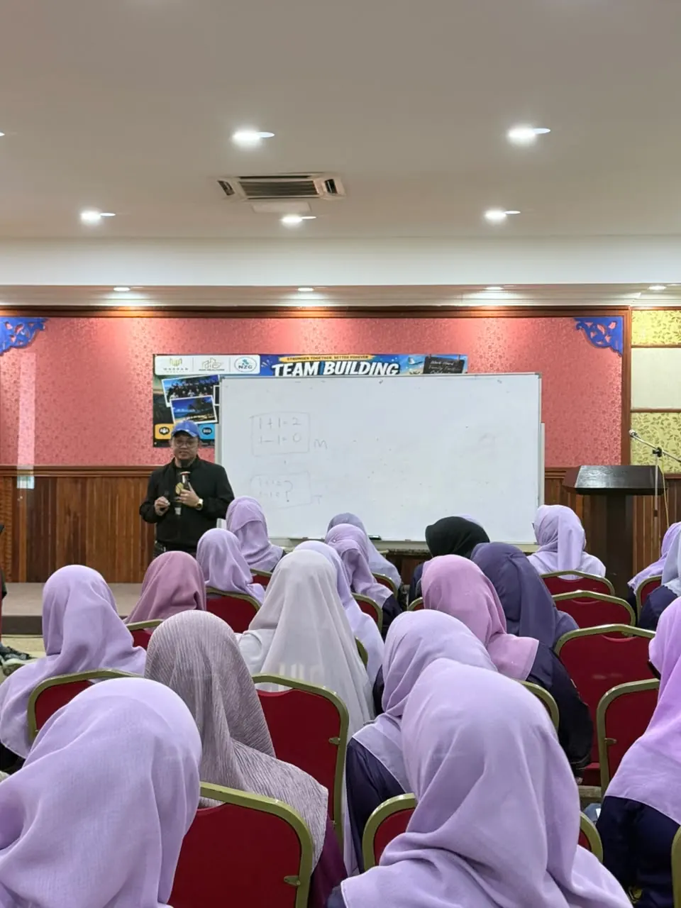
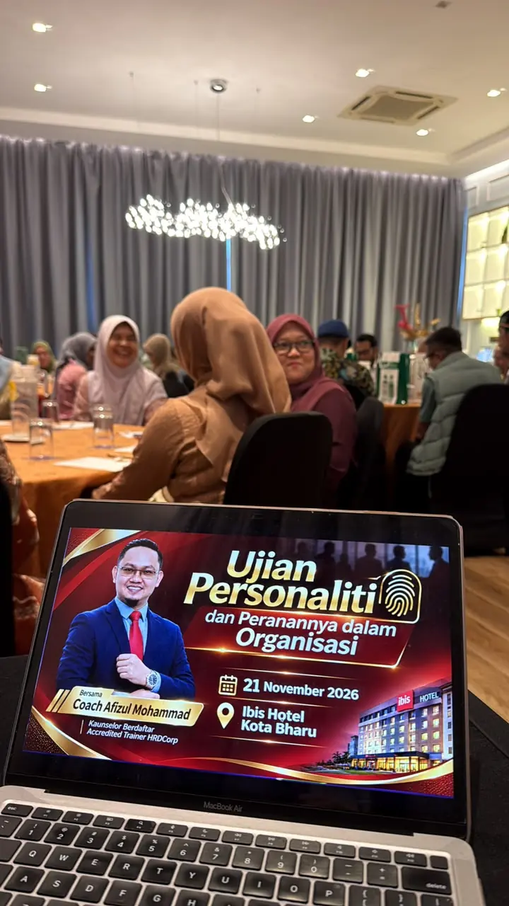
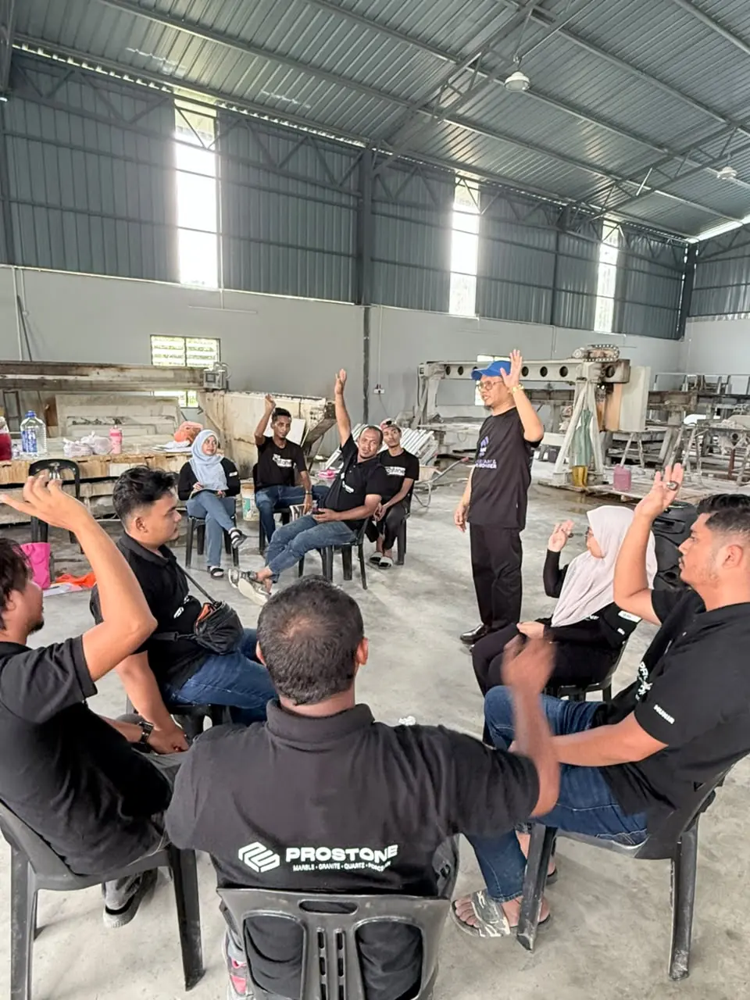
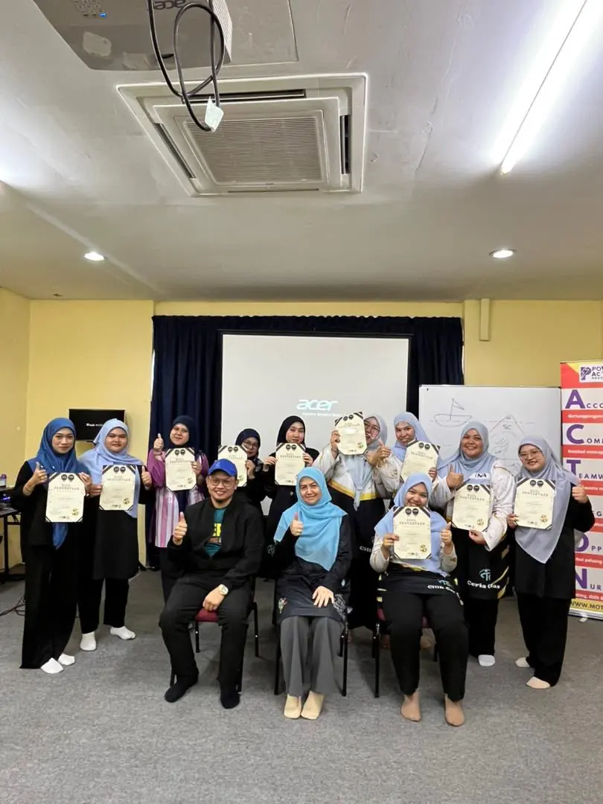

Latihan untuk Company dan Syarikat: Cara Memilih Program Latihan Pekerja yang Berbaloi
Latihan pekerja ialah pelaburan. Tetapi dengan begitu banyak pilihan, bagaimana company dan syarikat memilih latihan yang benar-benar memberi pulangan? Panduan ini menerangkan langkah praktikal — dari mengenal pasti keperluan hingga memilih penyedia latihan yang sesuai.

Kenapa company dan syarikat perlu melabur dalam latihan pekerja?
Mencari latihan untuk company dan syarikat? Sebelum memilih, fahami dahulu kenapa latihan penting. Pekerja yang dilatih dengan betul lebih yakin, lebih produktif dan lebih cenderung untuk kekal bersama organisasi. Latihan juga membantu syarikat menyelaraskan cara kerja, memperkukuh budaya organisasi dan menyediakan pekerja menghadapi perubahan.
Langkah 1: Kenal pasti keperluan latihan
Sebelum memilih program, jawab soalan ini:
- Apakah masalah atau peluang yang mahu ditangani? (contoh: aduan pelanggan, konflik pasukan, tekanan kerja)
- Siapa yang perlu dilatih — barisan hadapan, penyelia atau pengurusan?
- Apakah perubahan yang mahu dilihat selepas latihan?
Jawapan ini memudahkan penyedia latihan mencadangkan program yang tepat, bukan pakej umum.
Langkah 2: Pilih jenis program latihan
High-Performance Team Building
Untuk mengukuhkan komunikasi, kerjasama dan keupayaan pasukan bertindak bersama. Baca juga: 7 ciri team building berkesan.

Customer Service Excellence
Untuk membina kemahiran layanan, komunikasi dan penyelesaian isu supaya pengalaman pelanggan lebih konsisten.
Kesihatan Mental di Tempat Kerja
Program kesedaran dan pembelajaran yang menyokong kesejahteraan individu serta budaya kerja lebih sihat.
Sesi khusus mengikut keperluan
Contohnya sesi Ujian Personaliti dan Peranannya dalam Organisasi, yang membantu pekerja memahami diri dan rakan sekerja untuk bekerjasama dengan lebih baik.

Langkah 3: Soalan untuk ditanya kepada penyedia latihan
- Siapa jurulatihnya? Tanya tentang kelayakan, pengalaman dan bidang kepakaran.
- Bolehkah program disesuaikan? Program yang baik dibina mengikut objektif dan latar peserta anda.
- Bagaimana sesi dijalankan? Gabungan aktiviti, perbincangan dan refleksi lebih berkesan daripada ceramah sehala.
- Adakah penyedia berdaftar dengan HRD Corp? Penting jika syarikat anda mahu membuat tuntutan.
- Apa tindakan susulan selepas latihan? Pastikan pembelajaran dibawa ke tempat kerja.
Langkah 4: Pilih format latihan
Latihan in-house di premis syarikat
Jurulatih datang ke tempat kerja anda. Sesuai untuk ceramah, bengkel dan aktiviti dalam dewan. Jimat masa perjalanan dan mudah diatur mengikut syif kerja. Power Action Resources pernah mengendalikan sesi terus di lokasi kerja peserta — termasuk di gudang dan kilang.

Latihan di hotel atau resort
Peserta keluar dari rutin harian dan lebih fokus. Sesuai untuk program sehari penuh atau bermalam yang menggabungkan sesi dewan dan aktiviti luar.
Persidangan atau program berskala besar
Untuk syarikat yang menghimpunkan ramai pekerja serentak — contohnya persidangan tahunan — sesi motivasi dan team building boleh disepadukan dalam agenda.
Langkah 5: Ukur hasil latihan
Latihan yang berbaloi ialah latihan yang hasilnya boleh dilihat. Antara cara mudah:
- Bandingkan isu yang dikenal pasti sebelum latihan dengan keadaan beberapa minggu selepasnya.
- Minta peserta menulis komitmen tindakan, dan semak kemajuannya dalam mesyuarat bulanan.
- Kumpul maklum balas penyelia tentang perubahan tingkah laku pasukan.
Bincangkan cara pengukuran ini dengan penyedia latihan sebelum program bermula, supaya kandungan latihan disusun ke arah hasil yang sama.
Langkah 6: Semak kelayakan tuntutan HRD Corp
Bagi majikan berdaftar dengan HRD Corp, latihan pekerja boleh dirancang menggunakan program yang layak dituntut. Power Action Resources ialah HRD Corp Registered Training Provider dan program ditawarkan sebagai HRD Corp Claimable. Status tuntutan bergantung pada kelulusan program, majikan dan syarat HRD Corp yang berkuat kuasa — sila sahkan semasa perbincangan.

Latihan untuk company dan syarikat di Kelantan
Power Action Resources mengendalikan latihan untuk company dan syarikat di Kelantan — dari sesi di hotel di Kota Bharu hingga program di premis kerja peserta — serta di negeri lain mengikut keperluan. Kenapa memilih kami:
- Jurulatih: Afizul Mohammad — HRD Corp Trainer dan kaunselor berdaftar, Master Kaunseling (UKM).
- Lebih 15 tahun pengalaman bersama organisasi korporat dan kerajaan; lebih 10,000 peserta.
- Program disesuaikan mengikut objektif organisasi anda.
- HRD Corp Registered Training Provider.
Soalan lazim
Apakah latihan yang sesuai untuk company dan syarikat kecil?
Mulakan dengan keperluan paling mendesak, contohnya komunikasi pasukan atau layanan pelanggan. Program boleh disesuaikan mengikut bilangan peserta, tempoh dan bajet syarikat.
Bolehkah latihan dijalankan di premis syarikat?
Boleh. Banyak sesi seperti ceramah, bengkel dan aktiviti dalam dewan boleh dijalankan di bilik mesyuarat atau dewan syarikat.
Adakah latihan Power Action Resources boleh dituntut HRD Corp?
Power Action Resources ialah HRD Corp Registered Training Provider dan program ditawarkan sebagai HRD Corp Claimable, tertakluk kepada kelulusan program, majikan dan syarat HRD Corp yang berkuat kuasa.